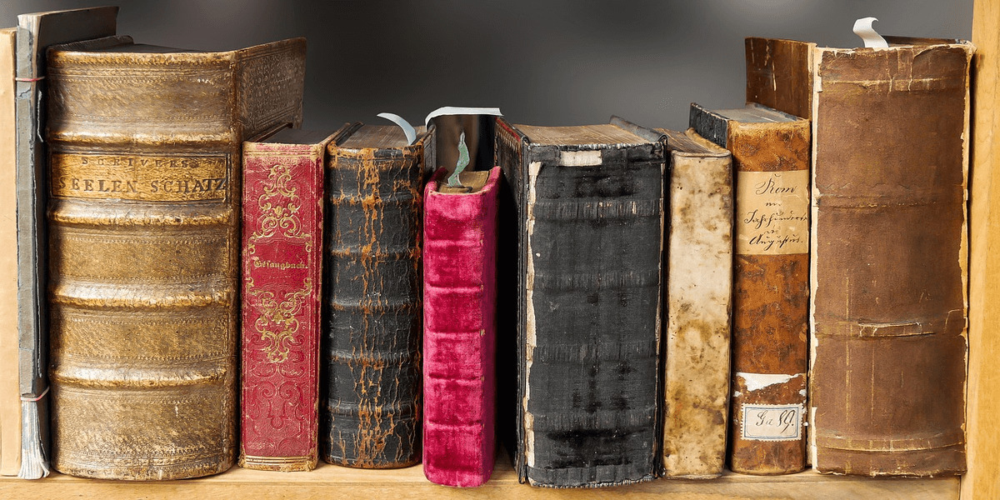

Олександр Олесь (справжнє прізвище — Кандиба) народився 23 листопада (5 грудня)
1878 року у міщанській родині Івана Федоровича Кандиби та його дружини Катерини (Олександри) Василівни в
містечку Білопілля Харківської губернії. Батько поета працював на рибних промислах на Волзі, і випадково
втопився на річці, коли Олександру було 11 років. Мати, дві сестри, дід, який жив у селі і до якого щороку
їздив хлопець, були його найближчою родиною. У чотири роки Сашко навчився читати. А дядько Василь, з яким жили
в одній хаті, прилучив до творів Т. Шевченка, П. Куліша та М. Вовчка. Початкову освіту здобув у сільській школі.
У 15-річному віці (1893) вступив до хліборобської школи у містечку Деркачі неподалік Харкова. Там Олександр брав
участь у випуску рукописних журналів «Комета» та «Первоцвіт», в яких з'являються його перші вірші. Став вільним
слухачем агрономічного відділення Київського політехнічного інституту, незабаром через матеріальні нестатки Олесь
змушений був залишити його. Працював у маєтку промисловця практикантом. 1903 року Олесь склав іспит із латини і вступив
до Харківського ветеринарного інституту. Під час навчання в інституті водночас заробляв на прожиття статистиком у земстві.
1907 року одружився з Вірою Свадковською, яка народила йому сина Олега Ольжича. З жовтня 1909 року працював ветеринарним
лікарем у Києві, водночас з 1911 року співпрацював у редакції «Літературно-наукового вістника» та у видавництві «Лан».
1919 року виїхав до Будапешта як аташе з питань культури посольства Української Народної Республіки в Угорщині. З 1920 року
проживав у Відні, де очолював Союз українських журналістів та редагував журнал «На переломі». З 1924 року жив у Празі (Чехословаччина).
Листування Олеся з Олегом Ольжичем демонструє справді теплі й ніжні родинні стосунки, батьківську турботу про освіту,
захоплення та професійні інтереси сина.Тяжкими були останні роки Олександра Олеся. Гітлер розчленовує Чехословаччину, яка
прихистила поета. Угорські нацисти в крові затопили проголошену державність Карпатської України. У вересні 1939 року спалахнула
Друга світова війна. Поета не покидають тривожні думи про сина Олега — активного учасника руху Опору. Восени 1941 року юнак побував
у Києві, мріючи про відновлення української державності. Та боротьба була нерівною: нацисти схопили Олега Ольжича і в червні 1944 року
закатували в концтаборі Заксенгаузен. Так передчасно обірвалося життя відомого вченого-археолога і талановитого поета.22 липня 1944 року
Олександр Олесь помер у Празі, невдовзі після того, як одержав повідомлення про загибель сина Олега Ольжича. Похований на Ольшанському кладовищі в Празі.
